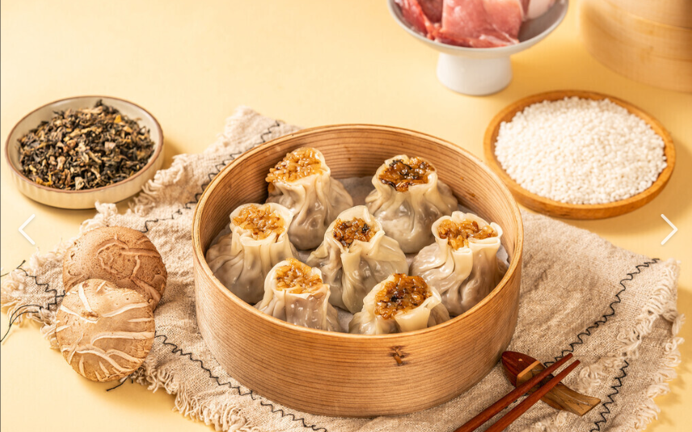

History & Origin
Dim Sum originated in southern China, along the ancient Silk Road teahouses. Travellers stopped to rest, drink tea and eat small snacks. Later it developed into the famous "Yum Cha" culture in Guangzhou and Hong Kong.

Most dim sum are handmade. Chefs need great skill to make thin wrappers and balanced fillings. It is not only food, but also a craft.